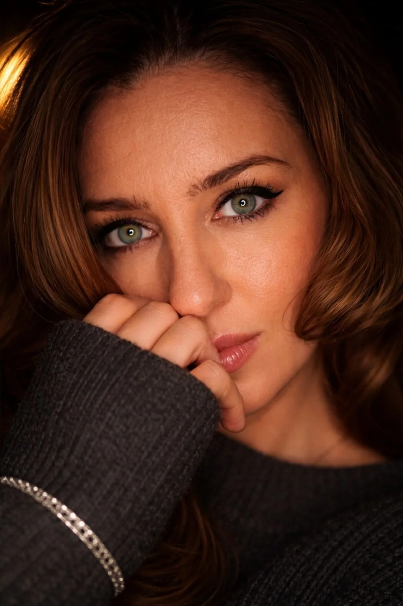
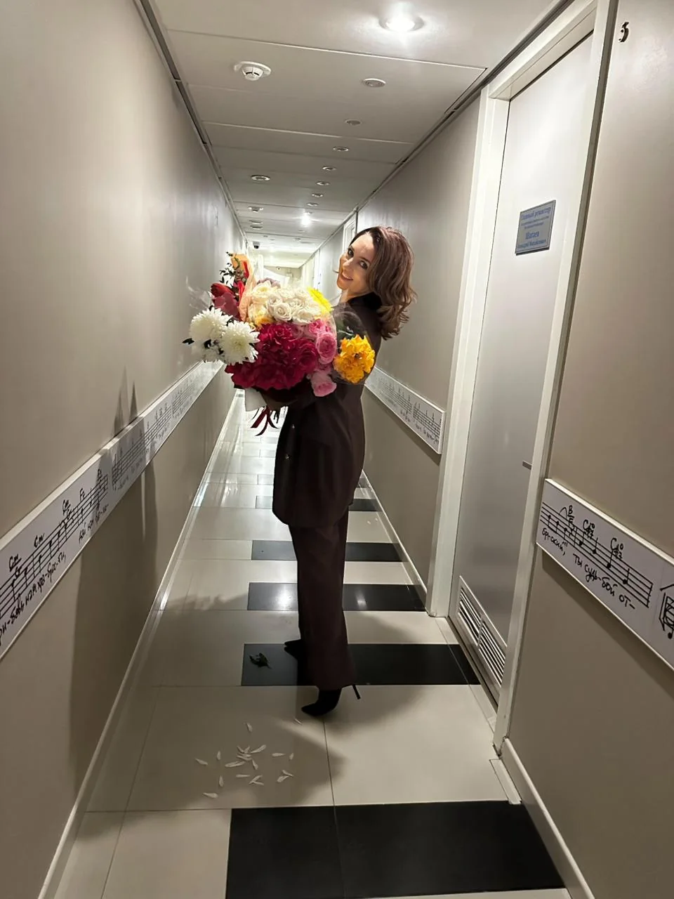
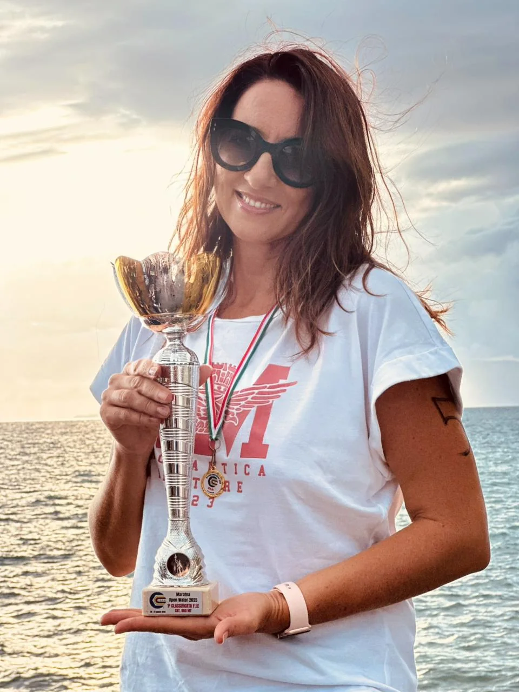

Спокойный контроль
Она держит процесс без лишнего шума: задачи, люди, сроки и бэкстейдж остаются в рабочем ритме.
Юлия Комарова — организатор концертов и представитель агентства Best Sound. Её работа связана с подготовкой концертных событий, где важны точная координация, спокойная коммуникация и внимание к деталям, которые зритель обычно не видит.

Юлия работает в концертной индустрии как человек, для которого событие начинается задолго до выхода артиста на сцену. В её профессиональном фокусе — подготовка, координация, коммуникация с участниками процесса и контроль деталей, от которых зависит общее впечатление от мероприятия.
Юлия не работает через громкость и случайность. Её стиль — спокойная собранность, быстрый контакт с людьми и точное внимание к тому, что должно сработать вовремя.
Она держит процесс без лишнего шума: задачи, люди, сроки и бэкстейдж остаются в рабочем ритме.
Для неё концерт — не набор действий, а цельная композиция, где важны путь гостя, состояние команды и финальное впечатление.
Опыт соревнований дал ей дисциплину, устойчивость к давлению и привычку работать до результата.

BEST SOUNDЕё деятельность связана с организацией концертных событий, гастрольной логикой, работой с площадкой, командой и бэкстейдж-процессами.
В профессиональном контексте Best Sound представлены Alessandro Safina, Joe Lynn Turner и концертные направления по России и странам СНГ.
Best SoundЮлия неоднократно участвовала в соревнованиях по плаванию в России и Италии, становилась призёром разных стартов, а в 2024 году выступила на международном SwimCup и вошла в топ-5. Спорт сформировал в ней выдержку, темп и способность работать на результат.

2024В работе Юлии событие рассматривается как цельная система: идея, подготовка, команда, бэкстейдж, публика и финальное впечатление.
Формат, аудитория, настроение, масштаб и структура события.
Команда, тайминг, площадка, участники и последовательность действий.
Невидимая часть мероприятия: коммуникация, контроль деталей и спокойное управление процессом.
Событие, которое воспринимается цельно: сцена, публика, атмосфера и профессиональный уровень.